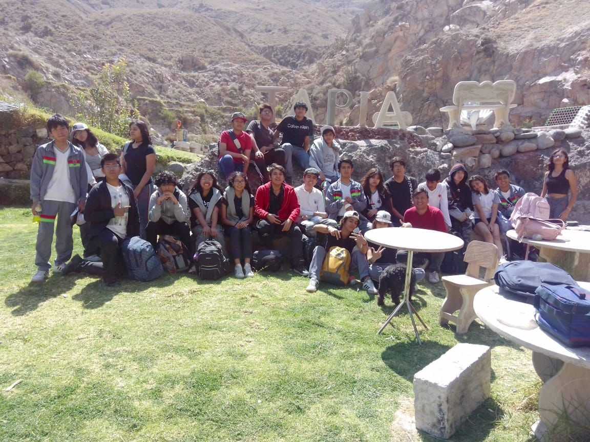

Arequipa, a menudo conocida como la «ciudad blanca», no solo es famosa por su impresionante arquitectura colonial y sus majestuosos volcanes, sino también por sus numerosos baños termales. Estas oasis naturales son perfectas para relajar el cuerpo y la mente, y al mismo tiempo aprovechar los beneficios para la salud que ofrecen las fuentes de agua ricas en minerales. Por eso es que hoy quisimos dar información acerca de uno de los mejores baños termales en y alrededor de Arequipa que debes visitar en tu viaje. Este complejo de aguas termales cuenta con cuatro piscinas diferentes: Tigre, Zamácola, Tadeo Haenke y Fierro Viejo. Las fuentes termales son alimentadas por la actividad volcánica del Chachani y tienen una temperatura que varía entre 23 °C y 28 °C. Estos baños son especialmente populares tanto entre los lugareños como entre los turistas, debido a sus propiedades curativas. El agua es rica en azufre y hierro, lo que la hace ideal para aliviar dolencias como artritis, reumatismo, dolores musculares, enfermedades nerviosas y problemas de piel. En el año 2024 se inauguraron nuevos vestuarios y áreas de descanso, mejorando significativamente la comodidad para los visitantes. Horario:
Los baños termales están abiertos todos los días de 6:00 a.m. a 6:00 p.m.
Precios: La entrada cuesta entre 6 soles peruanos por persona.
|

|